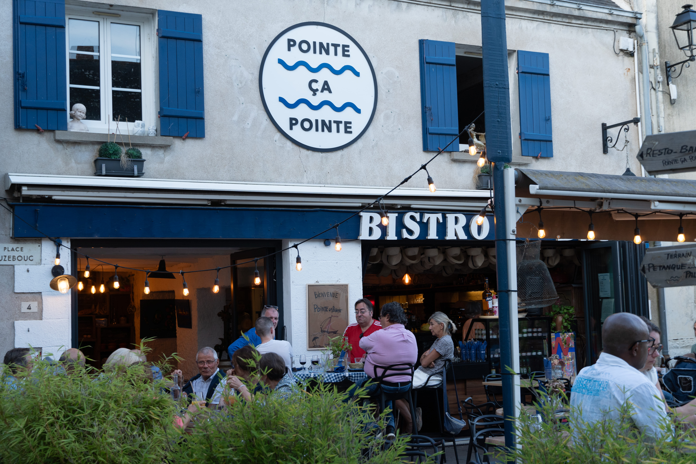

L'histoire derrière le concept qui nous est si cher.

Le terme « bistrot » trouve ses racines dans l’histoire parisienne du 19e siècle. Le mot vient du russe « Быстро » (bystro), qui signifie « vite ». Selon la légende, pendant l’occupation de Paris par les troupes russes en 1814, les soldats demandaient des repas rapides dans les tavernes parisiennes en criant « bistrot ! ». Ce cri aurait ensuite été repris par les taverniers pour désigner leurs établissements.
Les premiers bistrots étaient de petits établissements, souvent ouverts par des restaurateurs locaux, qui offraient des repas simples et abordables aux ouvriers et aux passants. Ces lieux se distinguaient par une atmosphère décontractée, une décoration minimale, et un menu mettant en avant des plats traditionnels français préparés avec des ingrédients locaux. Ils se différenciaient des restaurants plus sophistiqués par leur accessibilité et leur ambiance informelle.
Les bistrots traditionnels présentent souvent un décor simple et fonctionnel. On y trouve des tables en bois massif, des chaises en métal ou en bois, et un comptoir en zinc ou en marbre. Les murs sont parfois ornés de photographies anciennes, d’affiches vintage et de tableaux représentant des scènes de la vie quotidienne.
Cette simplicité contribue à une atmosphère chaleureuse et décontractée, ce qui les différencie des restaurants plus sophistiqués.
Le menu des bistrots est généralement axé sur une cuisine française traditionnelle, simple mais savoureuse. Ils mettent en avant des spécialités régionales, des plats faits maison et des ingrédients locaux.
Les repas incluent des soupes, des ragoûts, des viandes grillées, et des desserts classiques comme les tartes aux fruits et les crèmes brûlées. On y retrouve aussi une belle sélection de vins et de boissons à des prix abordables.
Le service est souvent informel et convivial. Les serveurs connaissent bien les habitués, créant ainsi une atmosphère de communauté et de convivialité.
Les bistrots attirent une clientèle variée : travailleurs, familles, touristes ou étudiants. Cette diversité contribue à l’ambiance animée et cosmopolite qui fait leur charme.
Une cuisine savoureuse au sein d’une ambiance décontractée. À l’origine, un bistrot constituait le lieu de prédilection des classes populaires qui venaient s’y détendre après une journée de travail.
Dans le monde de la gastronomie, le terme « bistrot » désigne un petit restaurant de cuisine de qualité, généralement servi par ses propriétaires.